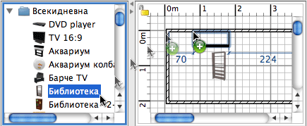

| Поставяне на врати, прозорци и мебелировка | |||
|
За да поставите врати, прозорци или мебелировка в плана, завлечете и пуснете от каталога в плана или в списъка с мебелировка желания обект.  Можете да го направите и като маркирате обект в каталога и след това изберете Мебелировка > Добави в плана или цъкнете върху бутона Добави в плана от лентата с инструменти.
Когато обектът е пуснат в списъка с
обекти или е добавен чрез инструмента Добави в плана,
неговият горен ляв ъгъл ще бъде поставен в точката с
координати (0, 0) в плана. Добавения в плана обект остава маркиран и едновременно с това се добавя в списъка с обекти, в плана и в 3D изгледа. По време на зареждането на 3D модела, в 3D изгледа той може да изглежда като бяла кутия. |
|